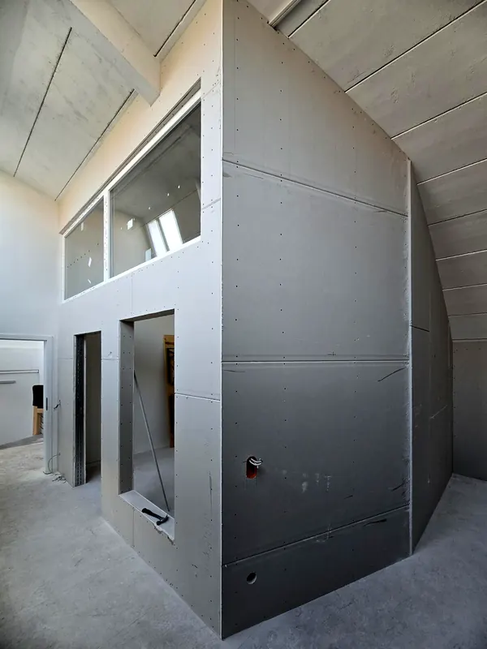
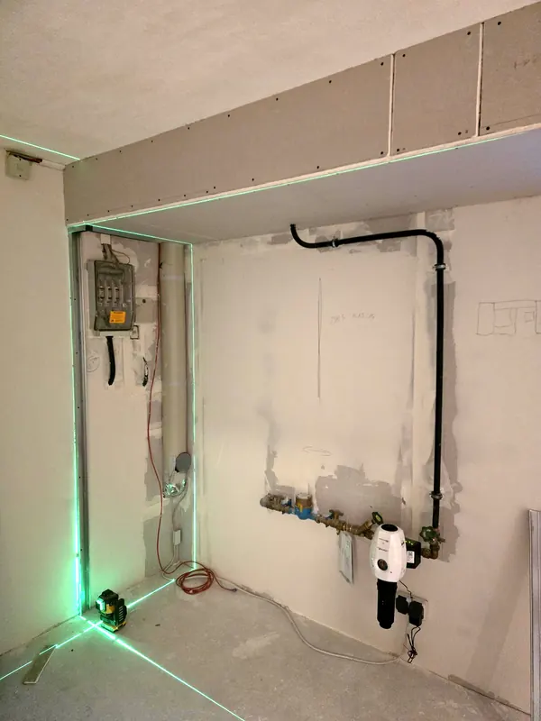
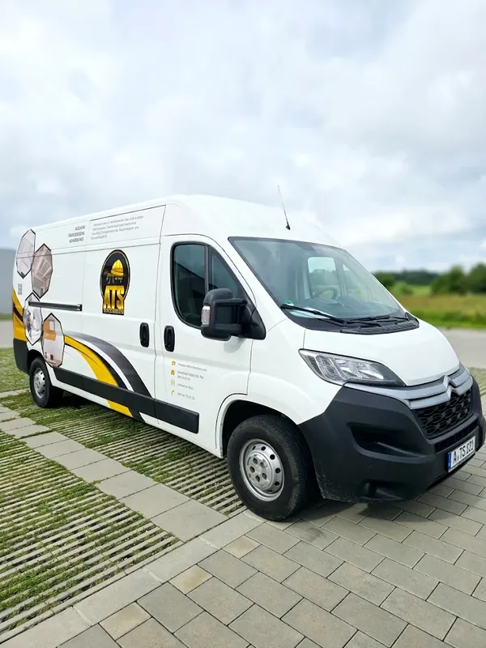

- Startseite
- Trockenbau
Trockenbau in Augsburg.
Neue Wände, glatte Decken und saubere Oberflächen, ohne Nassarbeiten und ohne lange Trocknungszeit. Für Wohnung, Haus, Büro und Praxis.


- Q1 bis Q4
- Oberflächen nach Wunsch
- Bis F90
- Brandschutz und höher
- 62,5 cm
- Ständerraster, mit Laser ausgerichtet
- 0 €
- kostet die Besichtigung
Leistungsumfang
Was wir im Trockenbau machen.
Mit geprüften Systemen der bekannten Plattenhersteller. Brandschutz-Abschottungen geschult bei ZAPP-ZIMMERMANN.
Trenn- und Ständerwände
Neue Raumaufteilung ohne Nassarbeiten. Einfach oder doppelt beplankt, mit Türzargen und Revisionsöffnungen.
CW 50 · 75 · 100Abgehängte Decken
Glatte Decken unter Altbau- oder Betondecken, mit Platz für Leitungen, Lüftung und Einbauleuchten.
CD-Profil · Direktabhänger · NoniusVorsatzschalen und Installationswände
Leitungen verschwinden hinter der Wand, alte Mauern werden gerade. Ideal für Bad und Küche.
GKBI imprägniert für FeuchträumeBrandschutz
Brandwände, Decken, Schächte und Stahlträgerbekleidungen bis F90 und darüber, dazu Abschottungen für Kabel und Rohre.
F30 · F60 · F90 und höherSchall- und Akustikdecken
Ruhe zwischen Räumen und bessere Sprachverständlichkeit in Büro, Praxis und Gastronomie.
Lochplatten · MineralfaserSpachteln und Malerarbeiten
Fugen, Kanten und Flächen streichfertig oder fertig gestrichen, in der Stufe, die Sie brauchen.
Q1 · Q2 · Q3 · Q4
Fotos von der Baustelle
So sieht das bei uns aus.
So entsteht eine Wand
In fünf Schritten zur fertigen Fläche.
- 1
Ständerwerk
UW-Profile an Boden und Decke, CW-Ständer im Raster von 62,5 cm. Das Gerüst entscheidet, wie gerade die Wand wird.
- 2
Dämmung
Mineralwolle zwischen den Ständern bringt Schallschutz und, je nach Aufbau, Brandschutz.
- 3
Beplankung
Gipsplatten 12,5 mm, einfach oder doppelt verschraubt. Im Bad mit imprägnierten Platten.
- 4
Spachteln
Fugen und Schraubköpfe werden gespachtelt und geschliffen, in der Qualitätsstufe, die Sie brauchen.
- 5
Fertig
Eine glatte Fläche, bereit für Farbe, Tapete oder Fliesen. Übergabe besenrein.
Oberflächen Q1 bis Q4
Wie glatt soll es werden?
Die Qualitätsstufen legen fest, wie eben eine Gipsplattenwand gespachtelt wird. So sehen die vier Stufen bei seitlichem Licht aus.
Q1 · Grundverspachtelung
Fugen gefüllt, Schraubköpfe überspachtelt. Beides bleibt im Licht sichtbar.
Geeignet für: Fliesen, weitere Verkleidung
Q2 · Standard
Fugen nachgespachtelt und stufenlos an die Plattenfläche angeglichen.
Geeignet für: Raufaser, grobe Tapeten, matte Farbe
Q3 · Sonderverspachtelung
Fugen breit ausgespachtelt, die ganze Fläche scharf abgezogen.
Geeignet für: Feine Tapeten, feine matte Anstriche
Q4 · Vollflächig
Die gesamte Fläche wird überzogen und geglättet. Keine Spuren, auch nicht im Streiflicht.
Geeignet für: Glanzlack, Metalltapete, große Fensterflächen
Simulation bei Streiflicht. Grundlage: Merkblatt Nr. 2 der Industriegruppe Gipsplatten.
Kundenstimme
„Wir hatten einen Plan von einer Innendesignerin und die Firma ATS hat sich sehr präzise an den Plan gehalten …“
Was kostet Trockenbau pro Quadratmeter?
Das hängt vom Aufbau, der Fläche und der gewünschten Oberfläche ab. Nach der kostenlosen Besichtigung bekommen Sie ein schriftliches Angebot, in dem jede Position nachvollziehbar aufgeführt ist.
Wie lange dauert eine neue Trennwand?
Eine einzelne Wand steht oft in wenigen Tagen, inklusive Spachteln. Den genauen Zeitplan finden Sie in unserem Angebot.
Wie viel Schmutz entsteht dabei?
Trockenbau ist deutlich sauberer als Mauern und Putzen. Wir decken Böden und Möbel ab, nehmen den Schutt mit und übergeben die Baustelle besenrein.
Brauche ich eine Genehmigung für eine Trennwand?
Für nichttragende Innenwände in der Regel nicht. In Mietwohnungen braucht es die Zustimmung des Vermieters. Bei Brandschutzanforderungen stimmen wir den Aufbau vorab mit Ihnen ab.
Kann ich an einer Trockenbauwand schwere Dinge aufhängen?
Ja. Bilder und Regale halten mit Hohlraumdübeln. Für Hängeschränke, Waschtische oder Fernseher bauen wir an der richtigen Stelle Verstärkungen in die Wand ein. Sagen Sie uns bei der Besichtigung, was wohin soll.
Geht Trockenbau auch im Bad?
Ja. In Feuchträumen verwenden wir imprägnierte Platten. Leitungen und Spülkästen verschwinden in einer Installationswand, Revisionsöffnungen halten sie zugänglich.
Welche Qualitätsstufe brauche ich?
Q2 ist der Standard und reicht für Raufaser, grobe Tapeten und matte Farbe. Für feine Anstriche empfehlen wir Q3. Bei Glanzlack, Metalltapeten oder großen Fensterflächen mit Streiflicht lohnt sich Q4.
Wie gut ist der Schallschutz einer Trockenbauwand?
Das hängt vom Aufbau ab. Mineralwolle im Hohlraum, doppelte Beplankung und entkoppelte Anschlüsse verbessern den Schallschutz deutlich. Wir schlagen den Aufbau passend zur Nutzung vor.
Weitere Leistungen
Das machen wir auch.
Kontakt
Erzählen Sie uns von Ihrem Projekt.
Wir melden uns innerhalb von zwei Werktagen, oft früher, und vereinbaren eine kostenlose Besichtigung.
- Telefon
- 0176 24142472
- Nachricht schreiben
- info@atstrockenbau.com
- Anschrift
- Droste-Hülshoff-Straße 26
86157 Augsburg - Erreichbar
- Mo–Fr 07:00–17:00 Uhr
